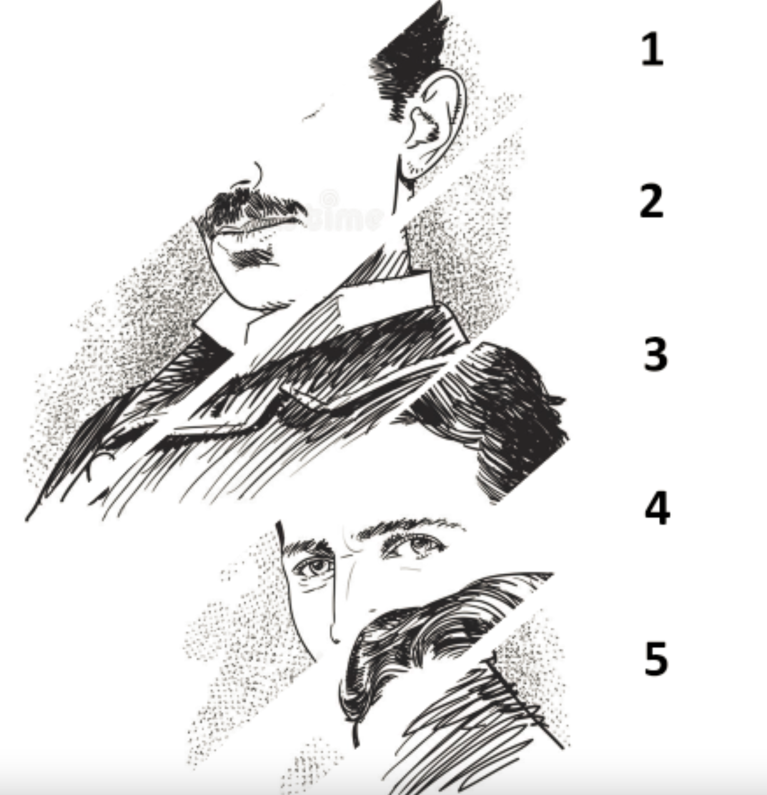

Soal Kecerdasan
- Pilihlah dua kata yang memiliki makna yang sama!
- PELEBURAN
- PENGHANCURAN
- FUSI
- PERSATUAN
- PEMISAHAN
- Pilihlah dua kata yang memiliki makna yang sama!
- REGRESI
- AGRESI
- CEKATAN
- PENGURANGAN
- SERANGAN
- Pilihlah dua kata yang memiliki makna yang sama!
- MUFAKAT
- PERIZINAN
- MORATORIUM
- PINJAMAN
- PENUNDAAN
- Pilihlah dua kata yang memiliki makna yang sama!
- DARMA
- PERJANJIAN
- PENEBUSAN
- KEWAJIBAN
- KEHORMATAN
- Pilihlah dua kata yang memiliki makna yang sama!
- ILUSI
- NYATA
- KONKRET
- FAKTA
- DELUSI
- Pilihlah dua kata yang memiliki makna yang sama!
- TEKAN
- DORONG
- SUNTIK
- INJEKSI
- GALI
- Pilihlah dua kata yang memiliki makna yang sama!
- ABSAH
- KUAT
- LEGAL
- ILEGAL
- KONKRET
- Pilihlah dua kata yang memiliki makna yang sama!
- PERSPEKTIF
- WARNA
- RONA
- CITRA
- GAMBARAN
- Pilihlah dua kata yang memiliki makna berlawanan!
- OFENSIF
- TAKLUK
- MAJU
- GENTAR
- BERTAHAN
- Pilihlah dua kata yang memiliki makna berlawanan!
- PENUH
- BERISI
- HAMPA
- KOSONG
- LUAS
- Pilihlah dua kata yang memiliki makna berlawanan!
- UJUNG
- POKOK
- PANGKAL
- AKHIR
- AWAL
- Pilihlah dua kata yang memiliki makna berlawanan!
- KENDALI
- TERBUKA
- BEBAS
- IKATAN
- KEKANG
- Pilihlah dua kata yang memiliki makna berlawanan!
- ORISINAL
- TULEN
- ILEGAL
- PLAGIAT
- MODIFIKASI
- Pilihlah dua kata yang memiliki makna berlawanan!
- GROSIR
- PRODUSEN
- GUDANG
- DISTRIBUTOR
- RITEL
- Pilihlah dua kata yang memiliki makna berlawanan!
- EMOSI
- NARSIS
- MELANKOLIS
- POSESIF
- CERIA
- Pilihlah dua kata yang memiliki makna berlawanan!
- UKURAN
- AKUR
- SETERU
- SERASI
- ATURAN
- JAWA BARAT : ... ≈ SUMATERA BARAT : …
- JAKA TARUB
- MALIN KUNDANG
- SI KANCIL
- SANGKURIANG
- SI PAHIT LIDAH
- PEKERJAAN : ... ≈ ORANG TUA : …
- YATIM
- PENGANGGURAN
- YATIM PIATU
- ANAK ASUH
- BALITA
- ... : DAUN ≈ PANDA : …
- KAMBING
- BUAH
- BAMBU
- DAGING
- HARIMAU
- Pilihlah dua kata yang tepat untuk melengkapi soal berikut ini! PINTU : ... ≈ .... : NAIK
- SUHU
- COLOUMB
- JAM
- GAYA
- ENERGI
- ... : BERSIH ≈ ASAH : …
- TANGKAP
- TUNAI
- TAJAM
- KERING
- CUCI
- BARAT : TIMUR ≈ … : …
- BARAT DAYA
- SELATAN
- BARAT LAUT
- TENGGARA
- TIMUR LAUT
- NORMA HUKUM : … ≈ NORMA AGAMA : …
- ULAMA
- HAKIM
- UNDANG-UNDANG
- PENGADILAN
- KITAB SUCI
- ANDI : DIFA ≈ … : ...
- ANAK
- HANI
- BALITA
- NISA
- AYAH
- PENULIS : BUKU ≈ … : ...
- PELUKIS
- HALAMAN
- LUKISAN
- SAMPUL
- KUAS
- Pilihlah satu kata yang memiliki makna yang paling jauh dari 4 kata lainnya!
- MARS
- JUPITER
- MERKURIUS
- NEPTUNUS
- SATURNUS
- Pilihlah satu kata yang memiliki makna yang paling jauh dari 4 kata lainnya!
- DINGIN
- GUGUR
- SEMI
- PANAS
- HUJAN
- Pilihlah satu kata yang memiliki makna yang paling jauh dari 4 kata lainnya!
- MELUKIS
- MEMAHAT
- MENGUKIR
- MENYELAM
- MEMBUTSIR
- Pilihlah satu kata yang memiliki makna yang paling jauh dari 4 kata lainnya!
- TUA
- RENTA
- WREDA
- JOMPO
- PENSIUN
- Pilihlah satu kata yang memiliki makna yang paling jauh dari 4 kata lainnya!
- BRIMOB
- DENSUS 88
- INFASI
- SABHARA
- DENJAKA
- Pilihlah satu kata yang memiliki makna yang paling jauh dari 4 kata lainnya!
- PINTAR
- BERHIAS
- ANGGUN
- INDAH
- CANTIK
- Pilihlah satu kata yang memiliki makna yang paling jauh dari 4 kata lainnya!
- ASMAT
- DAYAK
- BADUI
- INCA
- BATAK
- Pilihlah satu kata yang memiliki makna yang paling jauh dari 4 kata lainnya!
- JAM TANGAN
- KALUNG
- GELANG
- CINCIN
- ANTING
- Nadia membeli sepatu seharga Rp 185.000,00, dan mendapatkan diskon sebesar 20%. Berapa harga yang harus dibayar Nadia?
- Rp 145.000,00 0
- Rp 148.000,00
- Rp 150.000,00
- Rp 152.000,00
- Rp 156.000,00
- Perbandingan jumlah penonton laki-laki dan perempuan pada final kompetisi bola voli adalah 3:7, Jika jumlah total penonton adalah 1.200 orang. Berapakah jumlah penonton perempuan?
- Sebuah tali yang panjangnya 80 cm harus dipotong menjadi dua bagian dimana salah satu bagian adalah 2/3 dari bagian yang lain. Berapakah panjang tali terpendek?
- 30 cm
- 32 cm
- 34 cm
- 48 cm
- 52 cm
- Sebuah toko furnitur memiliki dua gudang penyimpanan kursi. Jumlah total kursi di kedua gudang sebanyak 124 buah. Jika jumlah kursi di gudang A lebih banyak 18 buah dari gudang B, berapakah jumlah kursi yang ada di gudang B?
- Steven menggunakan seperlima uang yang dimilikinya untuk membeli buku dan tas, harga tas tiga kali lipat harga buku. Jika jumlah uang yang tersisa adalah Rp 800.000,00, berapakah harga buku?
- Rp 40.000,00
- Rp 45.000,00
- Rp 50.000,00
- Rp 55.000,00
- Rp 60.000,00
- Sebuah toko kue dapat menghasilkan 360 kue dalam waktu 9 jam. Berapakah jumlah kue yang dihasilkan dalam waktu 2 jam?
- 40 kue
- 70 kue
- 80 kue
- 90 kue
- 120 kue
- Seorang penyelam yang berada pada kedalaman 61 meter di bawah permukaan laut mendapatkan pesan dari anaknya yang berada pada ketinggian 10 meter di atas permukaan laut (tepat di atas posisi Ayahnya) dari sebuah helikopter. Berapakah jarak yang harus ditempuh penyelam jika ingin pergi menuju lokasi anaknya?
- 71 meter
- 68 meter
- 56 meter
- 51 meter
- 82 meter
- Rina berangkat ke pasar setiap 4 hari sekali, sedangkan Budi berangkat ke pasar setiap 6 hari sekali. Jika hari ini mereka berangkat ke pasar bersama-sama, maka setelah 40 hari, Rina dan Budi akan berangkat ke pasar bersama-sama sebanyak...
- 6 kali
- 7 kali
- 5 kali
- 8 kali
- 4 kali
- Jika Ia berangkat dari rumah pukul 08:00, pada pukul berapa Teguh akan sampai di kantor?
- 09:45
- 09:50
- 09:53
- 09:55
- 10:00
- Seorang pedagang keliling menempuh perjalanan sejauh 54 km dalam waktu 9 jam. Dalam perjalanannya ia berjalan kaki dengan kecepatan 5 km/jam dan bersepeda dengan kecepatan 8 km/jam. Jarak dia bersepeda (dalam km) adalah…
- Naufal membayar Rp 23.000,00 untuk membeli 3 bolpoin dan sebuah pensil. Toni juga membeli 2 bolpoin dan 3 buah pensil di toko yang sama seharga Rp 20.000,00. Berapakah harga 1 buah pensil?
- Rp 3.800,00
- Rp 2.000,00
- Rp 1.800,00
- Rp 1.500,00
- Rp 1.000,00
- Hasil panen padi milik Pak Taufiq dialokasikan 2/5 bagian untuk anaknya, 1/6 bagian untuk dijual, dan 1/10 bagian untuk dibagikan kepada warga yang kurang mampu. Jika sisa padi milik Pak Taufiq sebanyak 120 kg, berapakah jumlah hasil panen padi milik Pak Taufiq?
- 200 kg
- 240 kg
- 280 kg
- 300 kg
- 360 kg
- Jarak dari Jakarta ke Mitrasiswa 70 km. Jaya pergi dari jakarta menuju Jakarta menggunakan sepeda motor dengan kecepatan 50 km/jam. Jika Jaya berangkat pada pukul 08:00, pada pukul berapa Ia akan sampai di Mitrasiswa?
- 09:24
- 09:36
- 09:45
- 10:00
- 10:28
- Sultan membeli sepeda motor seharga Rp 5.500.000,-. Untuk keperluan perbaikan Ia menghabiskan Rp 2.500.000,-. Satu bulan kemudian, Ia menjual motor tersebut seharga Rp 10.000.000,-. Berapa persen keuntungan yang didapatkan Sultan?
- Ginar ingin memasarkan produknya menggunakan salah satu aplikasi media sosial. Tarif untuk biaya iklan adalah 3 hari pertama sebesar Rp 46.000,-/hari, 2 hari berikutnya sebesar Rp 31.000,-/hari, dan setelahnya dikenakan tarif tetap sebesar Rp 10.000,-/hari. Jika Ginar membayarkan uang sebesar Rp 250.000,-, berapa lama produknya akan diiklankan di media sosial tersebut?
- 5 hari
- 7 hari
- 8 hari
- 9 hari
- 10 hari
- Sebuah rumah direncanakan akan selesai dibangun dalam waktu 24 hari oleh 8 pekerja. Jika pemilik rumah menginginkan selesai dalam 16 hari, berapa jumlah pekerja yang perlu ditambah?
- 4 orang
- 6 orang
- 8 orang
- 10 orang
- 12 orang
- Uang Ana banding uang Bebi banding uang Caca adalah 4 : 5 : 7. Jika uang Caca Rp 91.000, -, berapa jumlah uang mereka?
- Rp 200.000,00
- Rp 205.000,00
- Rp 216.000,00
- Rp 208.000,00
- Rp 220.000,00
- PILIHAN A
- PILIHAN B
- PILIHAN C
- PILIHAN D
- PILIHAN E
- 0,08 – 2 x 0,4 = …
- 0,88
- -0,88
- 0,248
- -0,72
- 0,72
- PILIHAN A
- PILIHAN B
- PILIHAN C
- PILIHAN D
- PILIHAN E
- PILIHAN A
- PILIHAN B
- PILIHAN C
- PILIHAN D
- PILIHAN E
- PILIHAN A
- PILIHAN B
- PILIHAN C
- PILIHAN D
- PILIHAN E
- PILIHAN A
- PILIHAN B
- PILIHAN C
- PILIHAN D
- PILIHAN E
- 2,5 km + 30 hm + 400 dm = … m
- PILIHAN A
- PILIHAN B
- PILIHAN C
- PILIHAN D
- PILIHAN E
- Sebuah toko elektronik memiliki persediaan kabel sepanjang 100 m. Pembeli pertama membeli kabel sepanjang 0,05 dam. Pembeli kedua membel kabel sepanjang 1.500 cm, dan pembeli ketiga sepanjang 25 dm. Berapakah sisa panjang kabel yang masih tersisa?
- PILIHAN A
- PILIHAN B
- PILIHAN C
- PILIHAN D
- PILIHAN E
- 4 rim + 2 gross – 7,5 kodi – 10 lusin = …
- 2008 buah
- 1598 buah
- 1898 buah
- 2018 buah
- 1776 buah
- Sebuah kantin memiliki 1/6 gross dan 3 kodi botol minuman. Jika minuman yang terjual sebanyak 23 botol minuman, maka berapa jumlah botol minuman yang tersisa?
- Sebuah perusahaan tambang emas melakukan penggalian dan mendapatkan batu mineral ore 50 kg dengan kadar emas 7% pada hari pertama. Pada hari kedua berhasil mendapatkan 60 kg dengan kadar emas 8%, dan pada hari ketiga 70 kg dengan kadar emas 9%. Berapa gram emas yang dihasilkan setelah proses pengolahan?
- 15.500 gram
- 14.600 gram
- 13.250 gram
- 13.500 gram
- 15.000 gram
- 5 milenium + 7 abad – 100 windu = ... tahun
- 5.800
- 1.800
- 4.900
- 3.900
- 3.800
- Sebagian artis bukan penyanyi
- Sebagian bintang film adalah artis
- Semua bintang film adalah artis
- Sebagian penyanyi bukan artis
- Sebagian penyanyi bukan bintang film
- Ada anak asrama yang menjadi pemain tenis
- Beberapa anak asrama bukan pemain tenis
- Tidak ada anak asrama yang menjadi pemain tenis
- Beberapa pemain tenis bukan pemain sepak bola
- Pemain sepak bola hanya bisa bermain sepak bola
- Wulan pegawai Dinas Kesehatan
- Wulan bukan pegawai Dinas Kesehatan
- Wulan belum tentu pegawai Dinas Kesehatan
- Wulan PNS dan pegawai Dinas Kesehatan
- Wulan tidak mau menjadi pegawai Dinas Kesehatan
- Pak Agus tidak menyukai padi varietas unggul
- Pak Agus hanya menyukai padi varietas unggul
- Selain Pak Agus, ada orang lain yang menyukai padi varietas unggul
- Belum tentu yang menanam padi juga menyukai padi varietas unggul
- Hanya yang menanam padi yang menyukai padi varietas unggul
- Setiap terjadi kenaikan harga kebutuhan pokok bekum tentu diikuti kenaikan tarif angkutan
- Tarif angkutan hanya naik jika ada kenaikan harga BBM
- Setiap terjadi kenaikan harga kebutuhan pokok pasti diikuti kenaikan tarif angkutan
- Setiap kenaikan tarif angkutan selalu diikuti kenaikan harga BBM
- Setiap terjadi kenaikan harga kebutuhan pokok tidak pasti diikuti kenaikan tarif angkutan
- Semua siswa Mitrasiswa sedang berada di kantin
- Tidak ada siswa Mitrasiswa yang sedang berada di perpustakaan atau kantin
- Semua siswa Mitrasiswa tidak berada di kantin
- Tidak ada siswa Mitrasiswa yang berada di kantin
- Semua siswa Mitrasiswa sedang berada di perpustakaan dan di kantin

- P tidak ditambah rempah‐rempah
- P ditambah rempah‐rempah
- P rasanya lezat dan aromanya mengundang selera karena tidak ditambah rempah‐rempah
- P rasanya tidak lezat dan aromanya tidak mengundang selera karena tidak ditambah rempah‐rempah
- P rasanya lezat, tetapi tidak ditambah bumbu
- Saat musim bukan kemarau warga gelisah
- Saat musin kemarau warga tidak gelisah
- Warga gelisah terjadi pada bukan musim kemarau
- Warga gelisah bukan karena sumber mata air kering
- Saat musim kemarau warga gelisah
- Ada laptop yang menggunakan layar sentuh tidak memakai baterai
- Ada laptop yang tidak memakai baterai, tidak menggunakan layar sentuh
- Ada laptop yang tidak menggunakan layar sentuh dan memakai baterai
- Ada laptop yang tidak menggunakan layar sentuh tidak memakai baterai
- Ada laptop yang tidak memakai baterai, menggunakan layar sentuh
- Beberapa taruna yang senang berenang senang minum jus
- Ada taruna yang senang berenang tidak senang minum jus
- Sebagian taruna yang senang berenang sulit tidur
- Beberapa taruna yang senang berenang tidak senang minum jus
- Sebagian taruna tidak senang berenang meskipun senang minum jus
- Nathan tidak membayar ketika menonton konser
- Nathan membayar cash ketika menonton konser
- Nathan membayar dengan tiket
- Nathan tidak mempunyai uang cash
- Nathan tidak membayar ketika menonton konser
- Peserta fun bike dapat memperoleh informasi selain pendaftaran.
- Peserta fun bike tidak memerlukan informasi pendaftaran
- Peserta fun bike tidak dapat memperoleh informasi pendaftaran
- Peserta fun bike dapat memperoleh informasi pendaftaran
- Peserta fun bike tidak dapat mendaftar
- Sebagian kemeja berukuran tidak besar dan memiliki kantong
- Sebagian kemeja berukuran besar dan tidak memiliki kantong
- Semua kemeja berukuran besar dan tidak memiliki kantong
- Semua kemeja berukuran tidak besar dan memiliki kantong
- Semua kemeja berukuran besar dan memiliki kantong
- Semua hewan karnivora suka makan daging, sayuran, dan berumur panjang
- Semua hewan karnivora yang suka makan sayuran pasti berumur panjang
- Sebagian hewan karnivora yang suka makan daging, belum tentu berumur panjang
- Sebagian hewan karnivora yang suka makan daging pasti berumur panjang
- Sebagian hewan karnivora tidak berumur panjang karena tidak makan sayuran
- Sebagian pejabat negara pasti dihukum
- Semua pejabat negara adalah koruptor.
- Semua pejabat negara pasti dihukum
- Semua koruptor adalah pejabat negara
- Sebagian koruptor tidak dihukum
- Ghina tidak bisa bernyanyi
- Ghina bukan penari yang dapat bernyanyi
- Ghina merupakan penari belum tentu dapat bernyanyi
- Tidak semua penari berprestasi
- Penari yang memiliki prestasi tidak dapat bernyanyi
- Semua pakaian musim panas harganya murah
- Semua musim panas pakaian desainnya sederhana
- Semua pakaian tipis bukan pakaian musim panas
- Sebagian pakaian musim panas desainnya sederhana
- Semua pakaian yang mahal bukan pakaian musim panas
- 1 – 3 – 2 – 5 – 4 – 6 – 7
- 1 – 2 – 3 – 5 – 4 – 6 – 7
- 1 – 3 – 2 – 4 – 5 – 7 – 6
- 1 – 4 – 3 – 2 – 5 – 7 – 6
- 1 – 2 – 3 – 4 – 5 – 7 – 6
- 1 – 3 – 2 – 5 – 4 – 6 – 7 – 8
- 1 – 2 – 3 – 5 – 4 – 6 – 7 – 8
- 1 – 3 – 2 – 4 – 7 – 6 – 5 – 8
- 1 – 4 – 3 – 2 – 5 – 7 – 6 – 8
- 1 – 2 – 3 – 4 – 5 – 7 – 6 – 8
- 3 – 1 – 2 – 5 – 4 – 6 – 7
- 3 – 1 – 4 – 2 – 5 – 7 – 6
- 1 – 3 – 2 – 4 – 5 – 7 – 6
- 1 – 4 – 3 – 2 – 5 – 7 – 6
- 3 – 1 – 4 – 5 – 2 – 6 – 7
- 
- 3 – 1 – 2 – 5 – 4
- 3 – 1 – 4 – 2 – 5
- 4 – 3 – 2 – 1 – 5
- 4 – 1 – 3 – 2 – 5
- 4 – 3 – 1 – 2 – 5
- 3 – 1 – 4 – 2
- 3 – 2 – 4 – 1
- 4 – 3 – 2 – 1
- 4 – 1 – 3 – 2
- 4 – 3 – 1 – 2
- 1 – 3 – 2 – 5 – 4 – 6
- 1 – 2 – 4 – 3 – 5 – 6
- 1 – 3 – 2 – 4 – 5 – 6
- 1 – 4 – 5 – 2 – 4 – 6
- 1 – 2 – 4 – 5 – 3 – 6
- 5 – 1 – 2 – 4 – 3
- 5 – 4 – 1 – 2 – 3
- 5 – 4 – 2 – 1 – 3
- 4 – 1 – 5 – 2 – 3
- 5 – 2 – 1 – 4 – 3
- 2 – 4 – 1 – 3 – 5
- 2 – 3 – 1 – 4 – 5
- 2 – 4 – 3 – 1 – 5
- 2 – 1 – 4 – 3 – 5
- 2 – 3 – 4 – 1 – 5
- 5 – 2 – 1 – 3 – 4
- 5 – 3 – 1 – 2 – 4
- 5 – 2 – 3 – 4 – 1
- 5 – 3 – 2 – 1 – 4
- 5 – 2 – 3 – 1 – 4
- 3 – 1 – 4 – 2
- 3 – 2 – 4 – 1
- 4 – 3 – 2 – 1
- 4 – 1 – 3 – 2
- 4 – 3 – 1 – 2
- 4 – 2 – 1 – 3 – 5
- 4 – 1 – 3 – 2 – 5
- 4 – 3 – 2 – 1 – 5
- 4 – 1 – 2 – 3 – 5
- 4 – 3 – 1 – 2 – 5

- PILIHAN A
- PILIHAN B
- PILIHAN C
- PILIHAN D
- PILIHAN E

- PILIHAN A
- PILIHAN B
- PILIHAN C
- PILIHAN D
- PILIHAN E

- PILIHAN A
- PILIHAN B
- PILIHAN C
- PILIHAN D
- PILIHAN E

- PILIHAN A
- PILIHAN B
- PILIHAN C
- PILIHAN D
- PILIHAN E

- PILIHAN A
- PILIHAN B
- PILIHAN C
- PILIHAN D
- PILIHAN E
UNTUK KUNCI JAWABAN, URUTAN NOMOR TERBALIK, 100=1